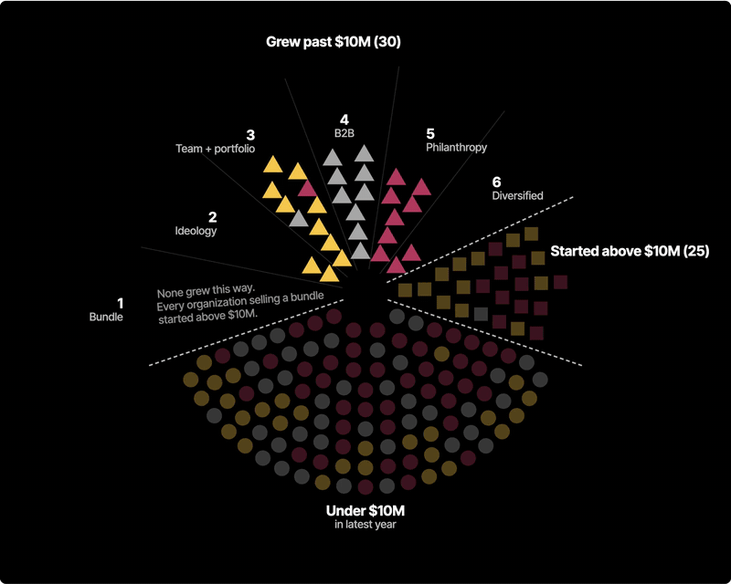

Nodes and Networks: review page
Each chart below is loaded exactly the way the report will embed it. The link under each heading opens that chart on its own page.
Figure 1: Funding and organization timeline, 2018–2026
Figure 2: The nine cohorts
Figure 3: Defector revenue, Years 1–5
Figure 4: Share of revenue from grants and donations, nonprofits with $3.5M–$10M in revenue
Figure 5: Revenue band distribution by cohort (n=169)
Explorer with autoplay
The same explorer embed with &autoplay=1 added. It turns through Governance, the 6 ways and History on its own until you click, tap, scroll or press a key. Without it, the explorer waits for the reader. Open on its own
Teaser for the explorer button: MP4 or GIF
The same 10-second loop in both formats. The MP4 is sharper and smaller, and it autoplays on phones as long as it stays muted. The GIF works anywhere, including places that strip video.
